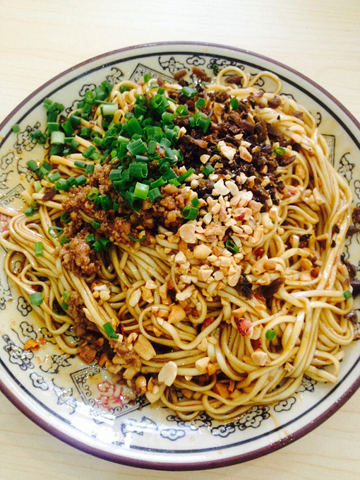

一座风景优美的美食之城。这里是万里长江第一城：金沙江与岷江在城中汇合，从此奔流的江水有了同一个名字——长江。
宜宾人的一天，是从一碗热气腾腾的燃面开始的。松散红亮、香辣扑鼻，再来一碗冰凉的凉糕，就是最地道的家乡味道。
城外有碧波万顷的竹海，城中有三江汇流的壮观。清晨去合江门看江水奔涌，傍晚到李庄古镇听长江边的桨声灯影。

想更了解我的家乡吗？可以看看 百度百科·宜宾， 云游一下 蜀南竹海， 也可以访问 宜宾市人民政府官网。
© 2026 李坤灿 欢迎来宜宾品尝美食
联系我：<can432324@qq.com>